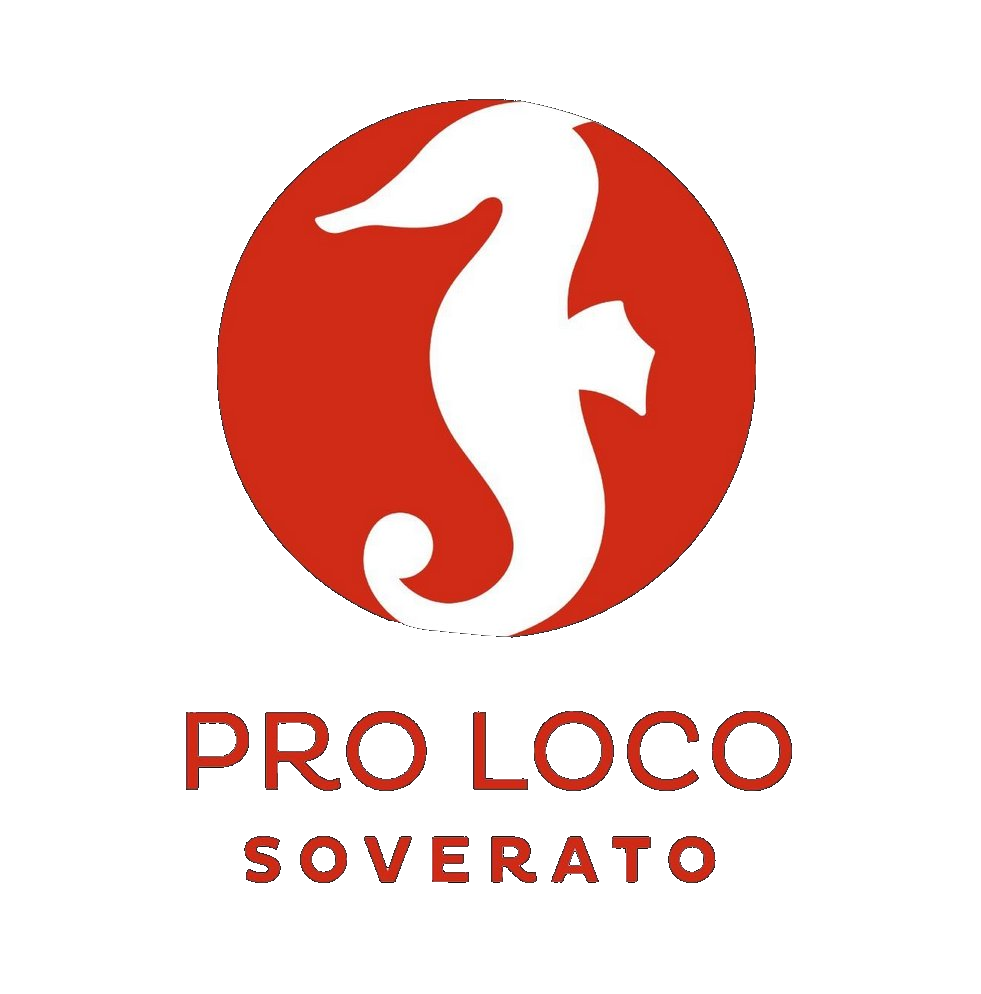

Portale ufficiale per la Calabria
Associazione
Pro Loco
Soverato
Sito istituzionale dell'Associazione Pro Loco di Soverato.
È online il nuovo portale ufficiale della Pro Loco di Soverato e di tutta la Calabria, dedicato alla promozione del territorio, alla valorizzazione delle tradizioni locali e all'informazione sulle attività dell'Associazione.